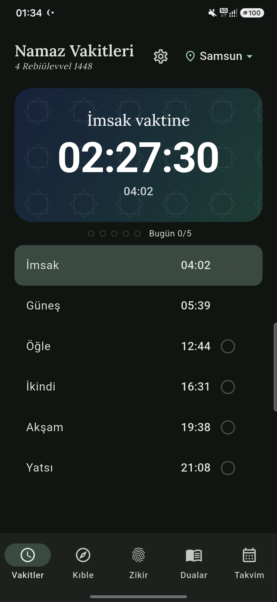
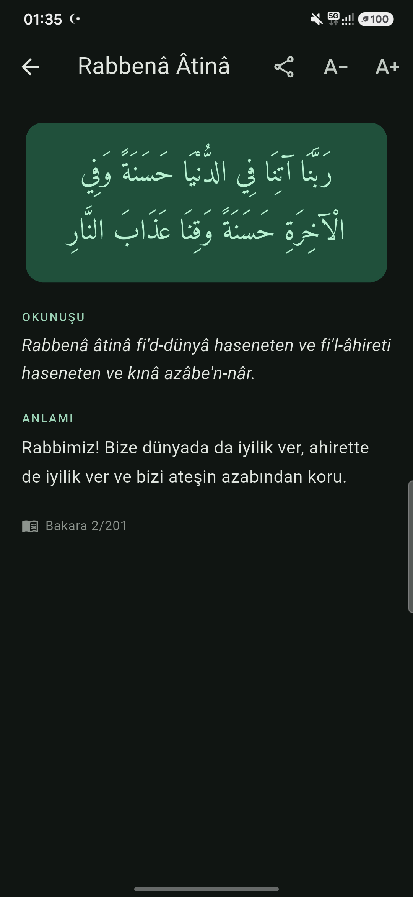
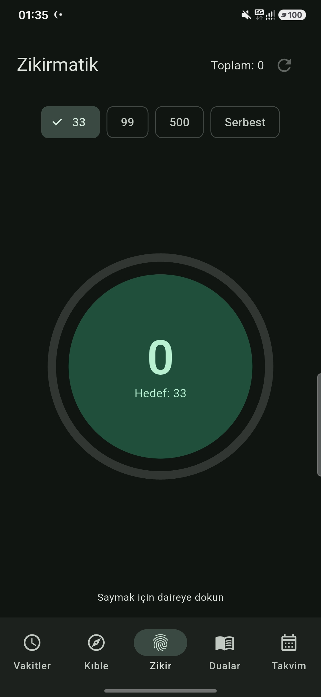
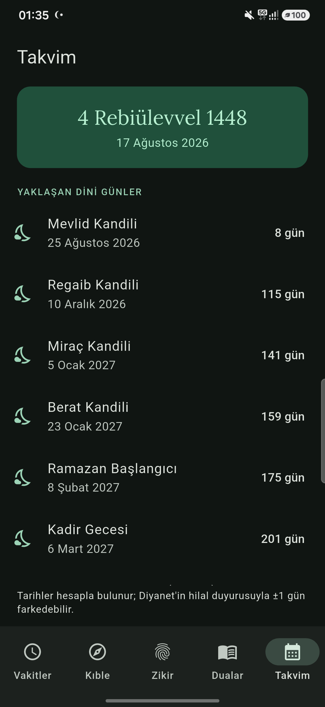

Uygulamadan kareler




Neler var?
🕌 Dakikası dakikasına ezan
Diyanet yöntemiyle cihazında hesaplanan vakitler; vakit öncesi hatırlatma ve vakit başına sesli/sessiz seçimi.
🌙 Kilit ekranı sayacı
Sıradaki vakte canlı geri sayım ve günün ayeti/hadisi — telefonu açmadan gör.
🖼️ Şık widget'lar
Geri sayım, günlük vakitler ve günün içeriği; buzlu cam veya kart stili, koyu temaya tam uyum.
🧭 Kıble pusulası
Hassas yön; kıbleye dönünce titreşimle onay.
📿 Zikirmatik
33/99/500/serbest hedefler, titreşimli sayım, kalıcı toplam.
📖 Kaynaklı kitaplık
Namaz duaları, ayetler, sahih hadisler ve özlü sözler — hepsi kaynaklı; Arapça + okunuş + anlam.
📅 Hicri takvim
Kandiller ve dini günler; kandil sabahı hatırlatma.
👵 Büyük Yazı Modu
Tek dokunuşla tüm uygulamada büyük, okunaklı yazı.
🔔 Bildirim Güvencesi
Sağlık Testi ve cihazına özel pil rehberi — "bildirim gelmedi" derdine son.